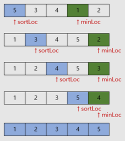

- 정렬할 위치를 선택한 후 최소, 최댓값을 찾아 그 위치로 옮기는정렬

- 왼쪽의 그림과 같이 sortLoc를 정한 후 sortLoc부터 배열 끝까지
최소, 최댓값 위치를 찾아 swap 해주면 된다
- 아래 코드는 오름차순 코드이다, 내림차순으로 할 경우 최댓값을 구하면 되겠다
void selectionSort(int *arr, int arrSize) {
int j, sortLoc, minLoc, tmp;
// arrSize - 1 만큼 반복하면 정렬 완성
for(sortLoc = 0; sortLoc < arrSize - 1; sortLoc++) {
minLoc = sortLoc;
for(j = sortLoc; j < arrSize; j++) {
if(arr[minLoc] > arr[j])
minLoc = j;
}
// 정렬할 위치와 최솟값의 위치가 다른 경우에만 swap 한다
if(minLoc != sortLoc){
tmp = arr[minLoc];
arr[minLoc] = arr[sortLoc];
arr[sortLoc] = tmp;
}
}
}